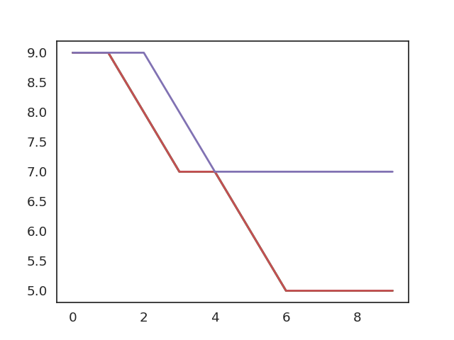

Bikeshare
Table of Contents
1. Bikeshare
Imaginge a bike share system for students travelling between Olin College and Wellesley College, which are about 3 miles apart in eastern Massachusetts.
Suppose the system contains 12 bikes and 2 bike racks, one at Olin and one at Wellesley, each with the capacity to hold 12 bikes.
As students arrive, check out a bike, and ride to the other campus, the number of bikes in each location changes.
from modsim import *
In the simulation, we’ll need to keep track of where the bikes are.
bikeshare = State(olin = 10, wellesley = 2)
we can read the variables inside a State object using the dot operator, like this
print(f"bikes at olin: {bikeshare.olin}\nbikes at wellesley: {bikeshare.wellesley}")
bikes at olin: 10 bikes at wellesley: 2
or if we forget the variables, we can do this -
print(bikeshare)
olin 10 wellesley 2 dtype: int64
The state variables and their values make up the state of the system. if a student moves a bike from olin to Wellesley, we can use update operators,
bikeshare.olin -= 1 bikeshare.wellesley += 1 print(bikeshare)
olin 9 wellesley 3 dtype: int64
Rather the repeat code every time bikes move, we can define functions -
def bike_to_wellesley(): bikeshare.olin -= 1 bikeshare.wellesley += 1 def bike_to_olin(): bikeshare.wellesley -= 1 bikeshare.olin += 1
similary we can define another function for simulation, suppose students arrive at the Wellesley station every 3 minutes, on average, the chance of an arrival during any one-minute period is 33%. Similarly, if students arrive at the Olin station every 2 minutes, on average, chance of arrival during any one-minute period is 50%.
we can hardcode the probability or else use parameters as in reality probabilities vary over time
def step(p1, p2): ''' Parameters ---------- p1: float, probability of bike arrival at Olin p2: float, probability of bike arrival at Wellesley ''' if flip(p1): bike_to_wellesley() if flip(p2): bike_to_olin()
Also saving the results in TimeSeries object and running the simulation
results = TimeSeries() for i in range(10): step(0.3, 0.2) results[i] = bikeshare.olin print(results.mean())
7.7
1.1. Plotting
Plotting the results
import sys plot(results) plt.savefig(sys.stdout.buffer)
